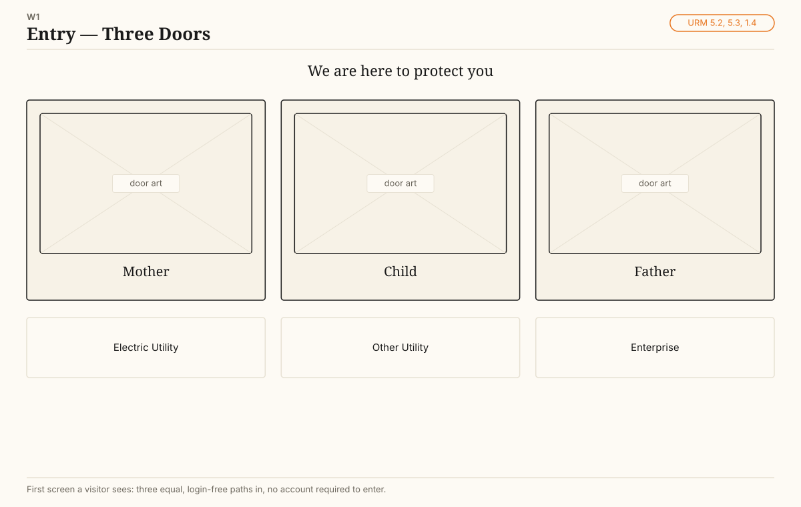
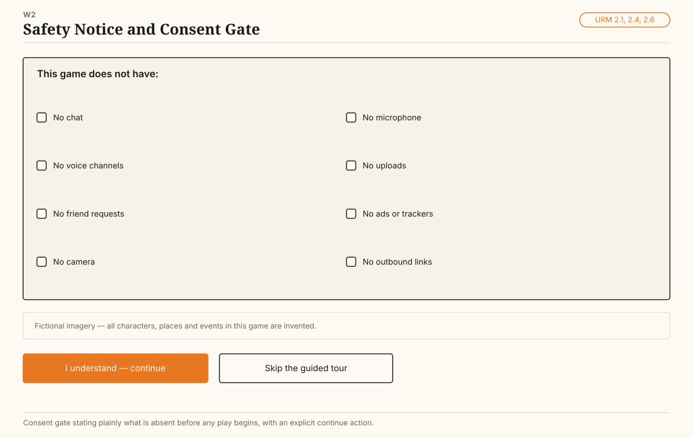
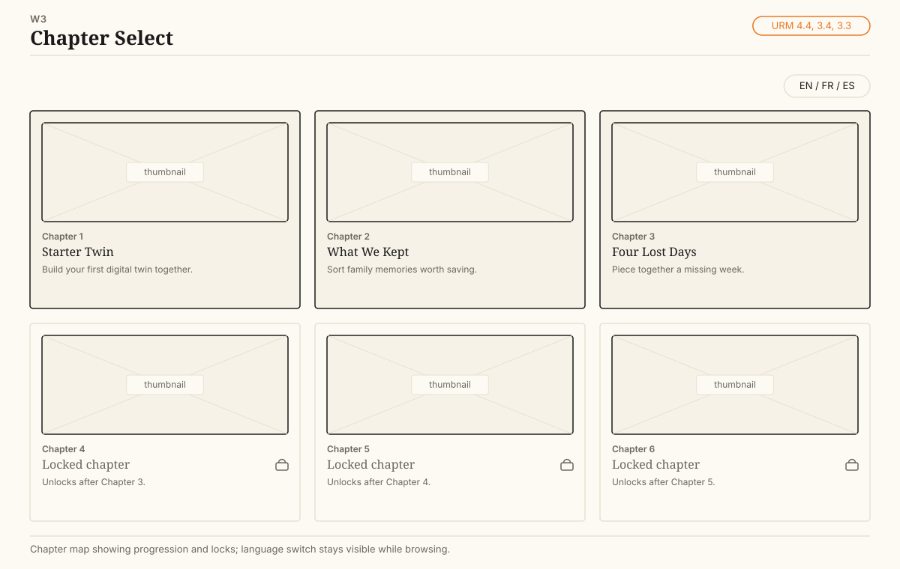
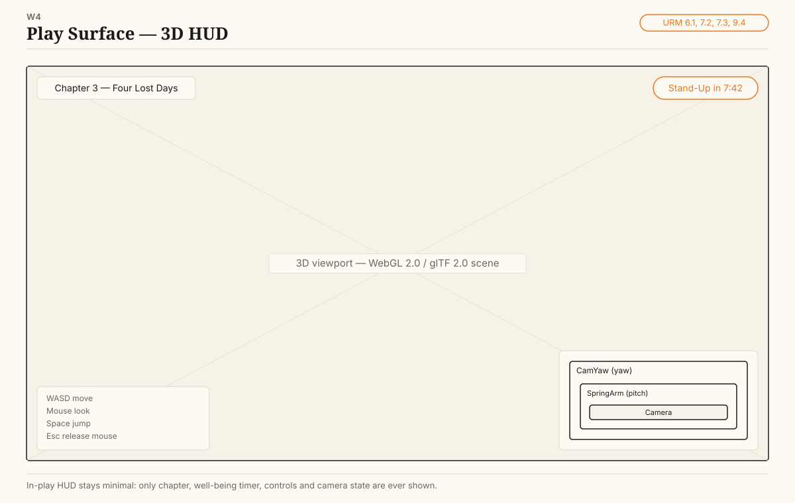
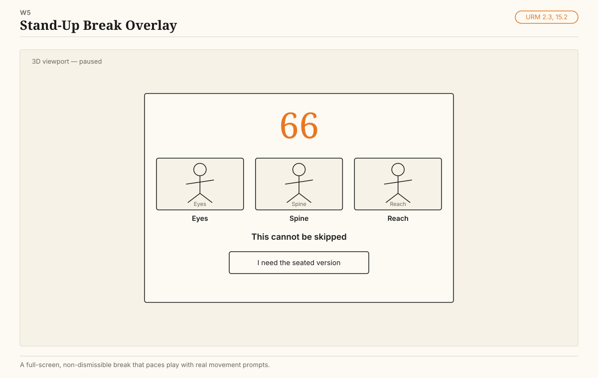
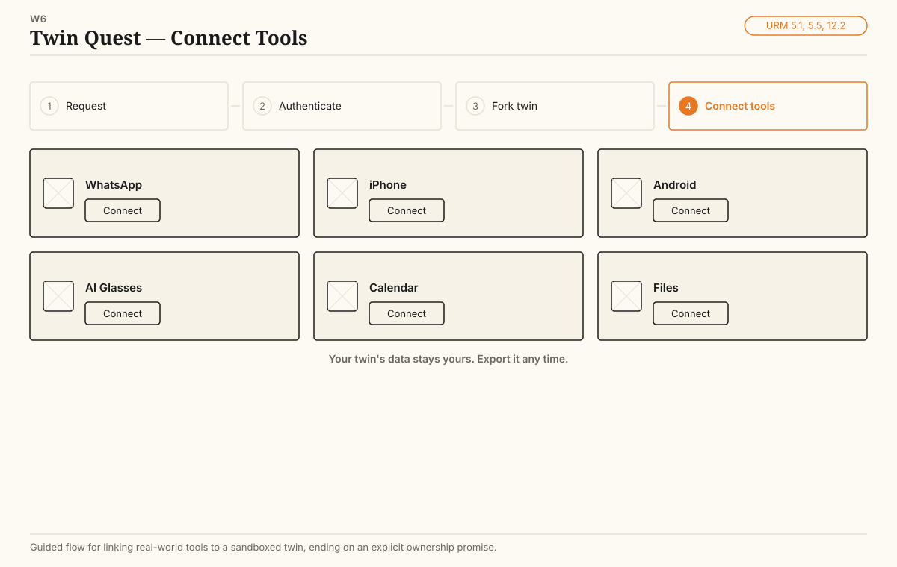
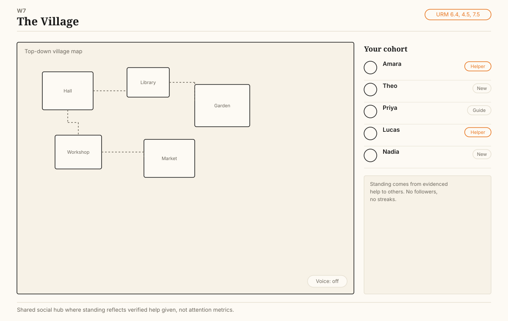
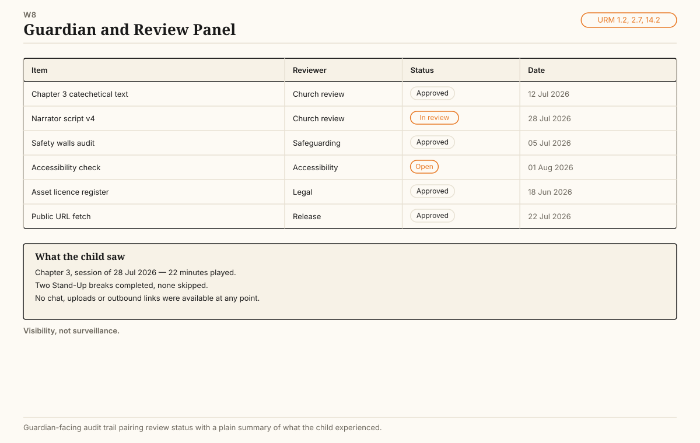

A numbered blueprint for a 3D educational game delivered at a URL on open standards — structured so every section maps outward to other reference models and enterprise architectures.
A world authored in Godot 4.7, exported to a 125 KB binary glTF file — 29 nodes, 8 meshes, 5 materials — and running in a browser tab with no plugin and no install. That file is the seam the whole architecture rests on: the engine can be replaced, the scene cannot be taken away.
ISO/IEC 12113:2022. The interchange contract between the authoring lane and the delivery lane.
The only renderer Godot can target on the web, and the one every browser already has.
Stable identifiers, never reused, never renumbered. Contracts and test plans can cite them.
One section may map to many external nodes. Repeating a field into several models is the mapping, not duplication.
L1 is a domain, numbered n. L2 is a capability, numbered
n.n, and is always one testable sentence. L3 is a component and belongs to
the technical design, not here. Status: Canon is in force,
Proposed needs a ruling,
Decision is a recommended but open fork,
Open is waiting on information.
Who may decide, who must review, and what a controlled artefact is.
| ID | Capability | Statement | Layer | Status |
|---|---|---|---|---|
| 1.1 | Umbrella copyright and dual-helix authority | Church authority and utility authority are paired under one umbrella copyright rather than a single owner. | B | Canon |
| 1.2 | Church review gate | Doctrinal conformance and Church testing are release requirements for any parishioner-facing build. | B | Canon |
| 1.3 | Controlled-document canon | Specifications ship as PDF with document ID, key ID, content hash, ISO-8601 stamp, watermark, copyright line and closing mark. | B | Canon |
| 1.4 | Naming and mark control | Studio name and product title are separate assets; product titles are cleared before publication and third-party marks are never used. | B | Open |
| 1.5 | Licence posture | Engine and framework are permissively licensed; narrative content stays EgD-owned; every third-party asset carries a recorded licence. | B | Canon |
| 1.6 | Defect register and change control | Breaches of canon are appended to a register in the same session, never silently corrected. | B | Canon |
| 1.7 | Safety first, betterment second | Where safety and capability conflict, safety wins and the trade is recorded. | B | Canon |
The walls around a child-facing surface, stated before any feature.
| ID | Capability | Statement | Layer | Status |
|---|---|---|---|---|
| 2.1 | Closed communication walls | No chat, voice channels, friend requests, camera, microphone, uploads, advertising, trackers or outbound links on the child surface. | B | Canon |
| 2.2 | Describe before generate | The child must describe intent in their own words before any generative step runs. | A | Canon |
| 2.3 | Mandatory Stand-Up | Every twelve minutes of active play triggers a non-skippable 66-second eyes, spine and reach break with a seated accommodation. The interval may be shortened for younger cohorts, never lengthened. | A | Canon |
| 2.4 | Fictional-imagery notice | Imaginative or symbolic imagery is labelled as fiction at the point of display. | B | Canon |
| 2.5 | Age banding and cohort scope | Content, session length and social surface are bounded by age band and school cohort. | B | Canon |
| 2.6 | Consent and skip gates | Start position, consent and skip gates run before the guided demo; interaction unlocks only in the play phase. | A | Canon |
| 2.7 | Guardian visibility | A guardian can see what the child saw without surveilling the child in real time. | B | Proposed |
What the story is allowed to assert, and on whose authority.
| ID | Capability | Statement | Layer | Status |
|---|---|---|---|---|
| 3.1 | Claim classification | Every narrative claim is tagged record, inference, lore, or author framing. Untagged claims do not ship. | D | Canon |
| 3.2 | Source-tagged corpus | Narrative source material carries citations to primary sources and records its own corrections. | D | Canon |
| 3.3 | Bounded Enoch adaptation | Only the Astronomical Book, 1 Enoch 72-82, is adapted, for calendar and heritage mechanics. Judgment and Watchers material is excluded from the main path. | D | Canon |
| 3.4 | Heritage chapter line | Acadian survival-and-rebuild chapters use the defensible 1636-1650 Port-Royal arrival range and make no oldest-site claim. | D | Canon |
| 3.5 | Narrator character bench | Uriel is the child-facing companion. Penemue is reserved for a truth-ledger lane. Valentinian Sophia is excluded in favour of Proverbs-Wisdom. | D | Canon |
| 3.6 | Copyright-limited corpus handling | Public-domain texts are stored in full; copyrighted editions are represented bibliographically only. | D | Canon |
| 3.7 | Worldbuilding boundary | Ideal-world and double-sphere imagery is framed as imagination, never as a prescriptive real-world claim. | B | Canon |
| 3.8 | Convergence labelling | Overlaps between sources are marked direct, structural or speculative, and non-convergences are recorded too. | D | Canon |
The teaching model the game exists to carry.
| ID | Capability | Statement | Layer | Status |
|---|---|---|---|---|
| 4.1 | Education parent, religion subsection | The parent programme is education; religious education is one part of it. | B | Canon |
| 4.2 | Fixed-output catechetical path | Catechetical answers are reviewed and deterministic, never open-ended generation. | A | Canon |
| 4.3 | Lesson primitives | Circle, triangle and sphere are the base geometric lesson objects the mechanics build on. | D | Canon |
| 4.4 | Chapter and progression model | Content is delivered as numbered chapters with an explicit unlock rule. | D | Canon |
| 4.5 | Service-and-evidence credibility | Standing is earned through evidenced help to others, not follower counts, streaks or engagement. | A | Canon |
| 4.6 | Assessment and mastery evidence | Progress is evidenced by artefacts the learner produced, not time on task. | D | Proposed |
| 4.7 | Game as doorway | The game lowers the entry barrier; education, the twin and free choice remain the process it carries. | B | Canon |
Who the player is to the system, and what the system owes them.
| ID | Capability | Statement | Layer | Status |
|---|---|---|---|---|
| 5.1 | Starter-twin quest | Onboarding is request access, authenticate, fork a starter twin, connect everyday tools. | A | Canon |
| 5.2 | Three doors | Humans enter as Mother, Child or Father; institutions are sorted separately as electric utility, other utility, or enterprise. | B | Canon |
| 5.3 | Consent-first protection message | The first cross-cultural message is protection, not capability. | B | Canon |
| 5.4 | Soft identification tier | Adult surfaces let the reader start freely and ask for identity only after meaningful engagement. | A | Canon |
| 5.5 | Twin ownership and portability | The twin's data belongs to the person and can be exported without permission from the platform. | D | Canon |
| 5.6 | Authentication backend | Identity verification runs through a named backend rather than hard-coded logic. | A | Proposed |
How space is described so every chapter is built the same way.
| ID | Capability | Statement | Layer | Status |
|---|---|---|---|---|
| 6.1 | Scene graph contract | One scene per chapter, one root per scene, no cross-scene node paths. | A | Canon |
| 6.2 | Metric ground plane | Units are metres. The floor's top surface sits at y = 0 and a character's origin is at its feet. | D | Canon |
| 6.3 | Chapter world inventory | Each chapter declares its geometry, interactables, spawn points and exits as data before it is built. | D | Proposed |
| 6.4 | The Village | A shared, voice-first common surface bounded by the child's school or cohort, with no feed-style global discovery. | A | Canon |
| 6.5 | Navigation and blocking volumes | Walkable area and blocked area are authored explicitly, not inferred from visual geometry. | A | Canon |
| 6.6 | Browser scene budget | Visible polygon count stays under roughly 50,000 and textures under 1024 px for the browser lane. | T | Canon |
The contract between the player's hands and the world.
| ID | Capability | Statement | Layer | Status |
|---|---|---|---|---|
| 7.1 | Named input actions | Code binds to named actions such as move_forward, never to raw key codes. This buys gamepad support and rebinding for free. | A | Canon |
| 7.2 | Camera-relative movement | Forward means away from the camera. Input is rotated by the camera rig's basis before it becomes velocity. | A | Canon |
| 7.3 | Split camera rig | Yaw lives on a rig node, pitch lives on a spring arm, so rotations cannot interfere and the camera cannot roll or clip walls. | A | Canon |
| 7.4 | Feel constants as contract | SPEED, ACCEL and TURN_SPEED are published tunables. Defaults are 5.5 m/s, 60, and 12. | A | Canon |
| 7.5 | Voice-first village interaction | Movement and voice are the primary interaction metaphor in the common surface, not text entry. | A | Canon |
| 7.6 | Touch and gamepad parity | Every action reachable by keyboard is reachable by touch and by gamepad. | A | Proposed |
What the world does when nobody is pressing anything.
| ID | Capability | Statement | Layer | Status |
|---|---|---|---|---|
| 8.1 | Fixed-tick simulation | Game logic advances on a fixed physics tick independent of frame rate. | A | Canon |
| 8.2 | Sequenced actions | Multi-frame actions such as a sword swing, a cutscene or a boss phase are written as coroutines, not state-machine sprawl. | A | Canon |
| 8.3 | Interaction volumes and timed windows | Hits and triggers use explicit volumes enabled for an explicit number of frames. | A | Canon |
| 8.4 | Deterministic puzzle state | Puzzle outcomes are reproducible from recorded input; no hidden randomness in assessed content. | A | Canon |
| 8.5 | Lossy-save assumption | Browser storage is assumed to be unreliable. Progress that matters is recoverable from the server or re-earnable. | D | Canon |
How it looks and sounds, bounded by the delivery target.
| ID | Capability | Statement | Layer | Status |
|---|---|---|---|---|
| 9.1 | Renderer profile | Browser lane runs WebGL 2.0 with a compatibility-class renderer. Advanced deferred rendering is native-lane only. | T | Canon |
| 9.2 | Lighting and tonemap profile | One directional key light with shadows, AgX tonemapping, ambient contribution from sky. | T | Canon |
| 9.3 | Palette and typography canon | Cream #fdfaf4, cream-2 #f7f2e7, ink #1a1a1a, line #e7e1d3, mute #6b665c, accent orange #e87722. Fraunces display, Inter body. | B | Canon |
| 9.4 | UI shell and HUD | Chrome is minimal during play; the safety timer and chapter title are the only persistent elements. | A | Proposed |
| 9.5 | Audio ceiling | No more than eight to ten simultaneous audio streams in the browser lane; fewer on mobile. | T | Canon |
The interchange contract. This is the layer that makes the work portable.
| ID | Capability | Statement | Layer | Status |
|---|---|---|---|---|
| 10.1 | glTF 2.0 as the interchange format | Every 3D asset and scene crosses tool boundaries as glTF 2.0, binary .glb preferred. This is the published ISO standard and the lowest common denominator across engines. | D | Canon |
| 10.2 | Texture container | Textures ship as KTX2 with Basis Universal supercompression where the runtime supports it, PNG otherwise. | D | Proposed |
| 10.3 | Resolution and budget ceiling | 1024 px texture ceiling for the browser lane; 2048 permitted native. | T | Canon |
| 10.4 | Naming and folder convention | Assets are named by chapter and role, not by author or date. | D | Proposed |
| 10.5 | Asset provenance register | Every imported asset records source URL, licence, and pinned commit or version. | D | Canon |
| 10.6 | Authoring toolchain | Blender for modelling, an open engine for scene assembly, both exporting glTF. No proprietary interchange format in the chain. | T | Canon |
How it becomes a URL.
| ID | Capability | Statement | Layer | Status |
|---|---|---|---|---|
| 11.1 | Browser baseline | The delivery target is a modern browser with WebAssembly and WebGL 2.0. No installer, no store, no plugin. | T | Canon |
| 11.2 | Two-lane engine strategy | A WebGL-2 web runtime is the public lane; a full desktop engine is the authoring and native lane. glTF is the seam between them, so neither lane owns the content. | T | Decision |
| 11.3 | Hosting profile | GitHub Pages by default. Cross-origin isolation headers are required only if the runtime uses shared-memory threading. | T | Canon |
| 11.4 | Reproducible build | Build artefacts are produced by a committed script from a pinned toolchain, never by hand. | T | Canon |
| 11.5 | Public URL as deliverable | Work exists when it is committed, pushed, and fetched successfully from its public URL. | B | Canon |
What is recorded, and what is deliberately not.
| ID | Capability | Statement | Layer | Status |
|---|---|---|---|---|
| 12.1 | No trackers on the child surface | No analytics, advertising identifiers or third-party beacons on any child-facing page. | T | Canon |
| 12.2 | Local-first state | Play state stays on the device unless the player chooses to sync it. | D | Canon |
| 12.3 | Adult review-signal logging | Engagement and review signals are logged on adult outreach surfaces only, and disclosed there. | D | Canon |
| 12.4 | Retention and deletion | Every stored field has a stated retention period and a working deletion path. | D | Proposed |
| 12.5 | Witnessed, not surveilled | Visibility to a trusted adult is the privacy metaphor; continuous monitoring is not. | B | Canon |
How this model plugs into everything else you own.
| ID | Capability | Statement | Layer | Status |
|---|---|---|---|---|
| 13.1 | Knowledge-graph surface | Narrative, lesson and progress entities are exposed as a temporal knowledge graph rather than locked in the build. | D | Proposed |
| 13.2 | Agent-tool surface | The graph is exposed over a standard agent-tool protocol so external assistants can read it. | A | Proposed |
| 13.3 | Portal embedding | The playable embeds inside the parish or institution portal rather than living as a standalone secular surface. | A | Canon |
| 13.4 | Crosswalk registry | Every section number here carries a crosswalk row to external reference models. Repeating one field into many target models is expected and permitted. | D | Canon |
| 13.5 | Lowest-denominator rule | Where two external models disagree, this model holds the simpler shape and maps upward, never downward. | B | Canon |
Keeping it alive and affordable.
| ID | Capability | Statement | Layer | Status |
|---|---|---|---|---|
| 14.1 | Repository as the record | The session is a scratchpad. Anything that matters is recoverable by cloning the repository and nothing else. | B | Canon |
| 14.2 | Release gates | Church review, safety review, accessibility check and a fetched public URL all pass before a release is called done. | B | Canon |
| 14.3 | Self-healing log | Decisions and corrections are captured as committed log entries, not left in chat. | B | Canon |
| 14.4 | Cost control | Spend is measured against a declared daily control before expensive work is authorised. | B | Canon |
| 14.5 | Peer-review intake | A public front door collects parent and peer feedback and routes it to a named channel. | B | Canon |
Who can actually play it.
| ID | Capability | Statement | Layer | Status |
|---|---|---|---|---|
| 15.1 | Contrast and focus | Text and interactive elements meet published contrast and keyboard-focus guidance. | A | Proposed |
| 15.2 | Seated accommodation | Every physical prompt, including the Stand-Up, has a seated equivalent. | A | Canon |
| 15.3 | Language set | English, French and Spanish are first-class. Strings are externalised, never embedded in scenes. | D | Canon |
| 15.4 | Low-end device profile | A named minimum device and connection profile is tested each release. | T | Proposed |
| 15.5 | Reading-level control | Child-facing text is held to a stated reading level and checked, not assumed. | B | Proposed |
Eight screens. Each names the capability numbers it implements, so a screen can be reviewed against the model rather than against taste. Line drawings on purpose — arguing about colour before the flow is agreed wastes everybody's time.








19 pinned repositories and specifications, each checked live against its host before it was written down. Nothing here is a guessed tag. See the library README for the fetch script and size warnings.
| ID | Source | Category | Pinned ref | Licence |
|---|---|---|---|---|
| REF-01 | glTF | glTF specification | 77b44be7bef26e01fb0b140e3d5bb1716421c5e9 | Other |
| REF-02 | glTF-Sample-Assets | glTF sample assets | 2bac6f8c57bf471df0d2a1e8a8ec023c7801dddf | Mixed per-asset |
| REF-03 | glTF-Sample-Viewer | glTF sample viewer | v1.0.10 | Apache-2.0 |
| REF-04 | glTF-Validator | glTF validation tooling | 2.0.0-dev.3.10 | Apache-2.0 |
| REF-05 | KTX-Software | KTX2 texture tooling | v4.4.0 | Apache-2.0 |
| REF-06 | glTF-Blender-IO | Blender glTF export pipeline | v4.2.3 | Apache-2.0 |
| REF-07 | three.js | Browser 3D runtime | r185 | MIT |
| REF-08 | Babylon.js | Browser 3D runtime | 9.19.0 | Apache-2.0 |
| REF-09 | PlayCanvas engine | Browser 3D runtime | v2.21.3 | MIT |
| REF-10 | godot-demo-projects (3d/platformer) | Godot official demo projects | 4652e17c04fe5f249dc53949fb195a3d8b24ee5f | MIT |
| REF-11 | godot-demo-projects (3d/rigidbody_character & kinematic_character) | Godot official demo projects | 4652e17c04fe5f249dc53949fb195a3d8b24ee5f | MIT |
| REF-12 | Godot engine (4.7.1-stable) | Godot desktop authoring lane | 4.7.1-stable | MIT |
| REF-13 | Godot: Exporting for the Web | Web export / hosting reference | stable (docs branch, not versioned by tag) | CC-BY 3.0 |
| REF-14 | MDN: Cross-Origin-Embedder-Policy | Web export / hosting reference | current (MDN is continuously updated, no version tag) | CC0 1.0 |
| REF-15 | WCAG 2.2 (W3C Recommendation) | Accessibility reference | W3C Recommendation, 12 December 2024 (also ratified as ISO/IEC 40500:2025) | W3C Document Licence |
| REF-16 | Godot: Internationalizing games | Localisation reference | stable (docs branch, not versioned by tag) | CC-BY 3.0 |
| REF-17 | Poly Haven | Open-licensed 3D asset source | n/a (asset library, not a git repo; licence page checked live) | CC0 1.0 Universal |
| REF-18 | Kenney game assets | Open-licensed 3D asset source | n/a (asset library, not a single git repo; licence checked per-pack on site) | CC0 1.0 Universal |
| REF-19 | ISO/IEC 12113:2022 (glTF, ISO reference record) | glTF specification | n/a (ISO catalogue record, no git ref) | ISO copyright — the ISO catalogue page is free to view; the full ISO-formatted PDF is normally paywalled, use the free Khronos-hosted GitHub spec |
The technical design then inherits these numbers and adds L3. Nothing may be built that has no parent number here; if something needs to be, the blueprint was wrong and comes back for amendment rather than being quietly extended.
{kind=link}
{kind=link}
{kind=link}
{kind=link}
{kind=link}
{kind=link}
{kind=link}
{kind=link}